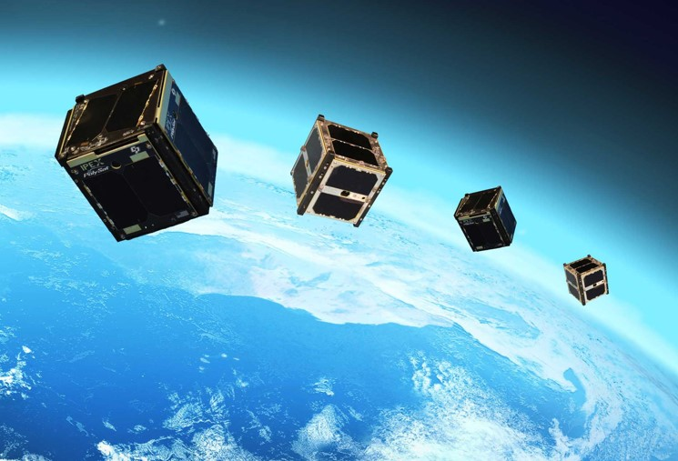
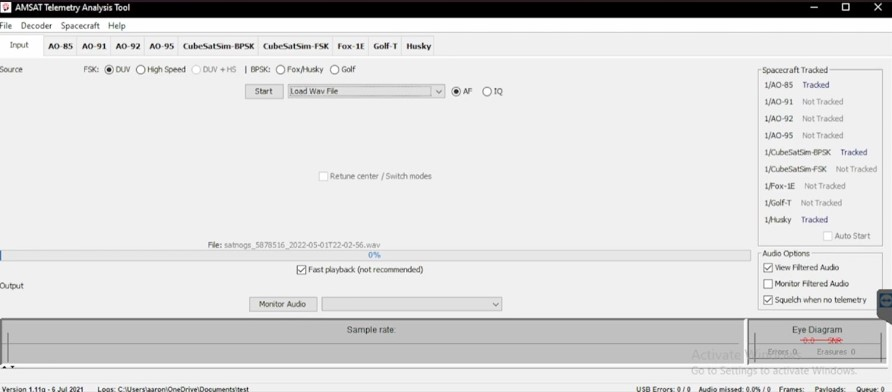

Year One: Graduating Class of 2021
Here at APU, we have had a tradition of several years of computer science senior capstone projects centered around APU's CubeSat endeavors. The computer science senior capstone projects are the culmination of a year's worth of planning and execution geared towards developing a marketable website or application. Students are encouraged to explore building a product that interests them, and there is always a group that does work centered around APU's CubeSat program as we gear up towards a launch.
Exploring what's possible
The first senior project based around our program was completed during the 2020-2021 school year. This group set out to build software that would become the foundation of how intermediate or amateur radio/spacecraft enjoyers show off their data.
Check out this team's GitHub respository here.
Step One:
Once launched, APU's CubeSat will send telometry data from space.
Step Two:
APU's ground station on the roof of Segerstrom (our science building) collects the telometry data transmitted from the CubeSat. Click this link to learn more about our ground station
Step Three:
This collected data is sent to FoxTelem, a software tool for storing and analyzing telmoetry data
Step Four:
This data is then committed to APU's database servers